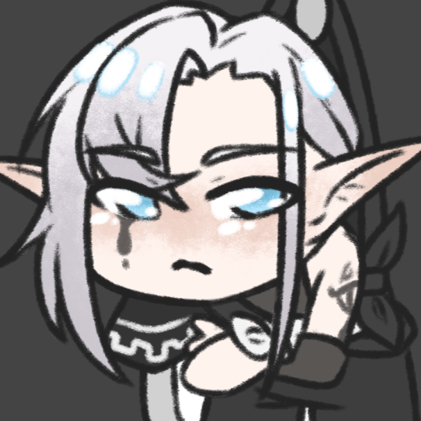

Suis ta progression directement sur Discord
Le bot Nele Wiki te permet de consulter et cocher tes checks sans quitter ton serveur !

Nele Wiki Bot
Ajoute le bot à ton serveur Discord pour commencer à l'utiliser. Il te faudra ensuite avoir lié ton compte Discord sur la page Mon suivi pour que tes checks fonctionnent.
Ajouter le bot à mon serveurLes commandes disponibles
/progression
Voir combien de checks il reste (et lesquels), filtrable par jeu et/ou catégorie.
/check
Valider un check comme obtenu, avec autocomplétion pour le retrouver facilement.
/uncheck
Décocher un check déjà validé par erreur.
/profil
Voir un résumé global de ta progression sur les deux jeux.
/aleatoire
Se faire suggérer un check restant au hasard, pour se motiver à explorer.
/comparer
Comparer sa progression à celle d'un autre membre du serveur.
/classement
Voir le podium du serveur, classé par nombre de checks validés.
/reset
Remettre à zéro une sélection de checks (avec confirmation).
/whoami
Vérifier que ton compte Discord est bien lié au site.
/site
Recevoir le lien direct vers Nele Wiki.
/help
Afficher la liste de toutes les commandes, directement sur Discord.